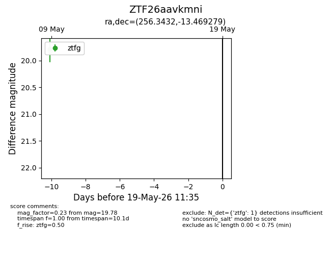
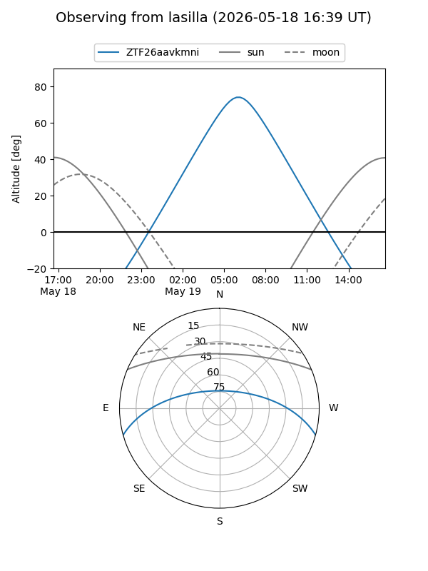
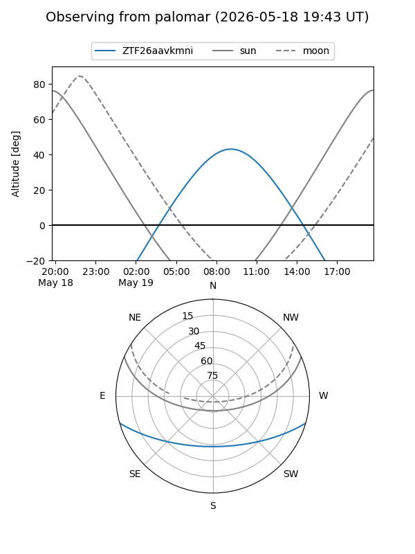

ZTF26aavkmni
Target ZTF26aavkmni at 2026-05-19 11:37
Aliases and brokers:
FINK: link
Lasair: link
ALeRCE: link
alt names
ZTF26aavkmni (ztf,fink_ztf)
Coordinates:
equatorial (ra, dec) = 256.3432,-13.46928
equatorial (HMS+DMS) = 17:05:22.37,-13:28:09.41
galactic (l, b) = (7.9592,+16.27204)
Flags:
Photometry:
last ztfg=19.78
1 ztfg detections
Lightcurve

Visibility


Additional plots